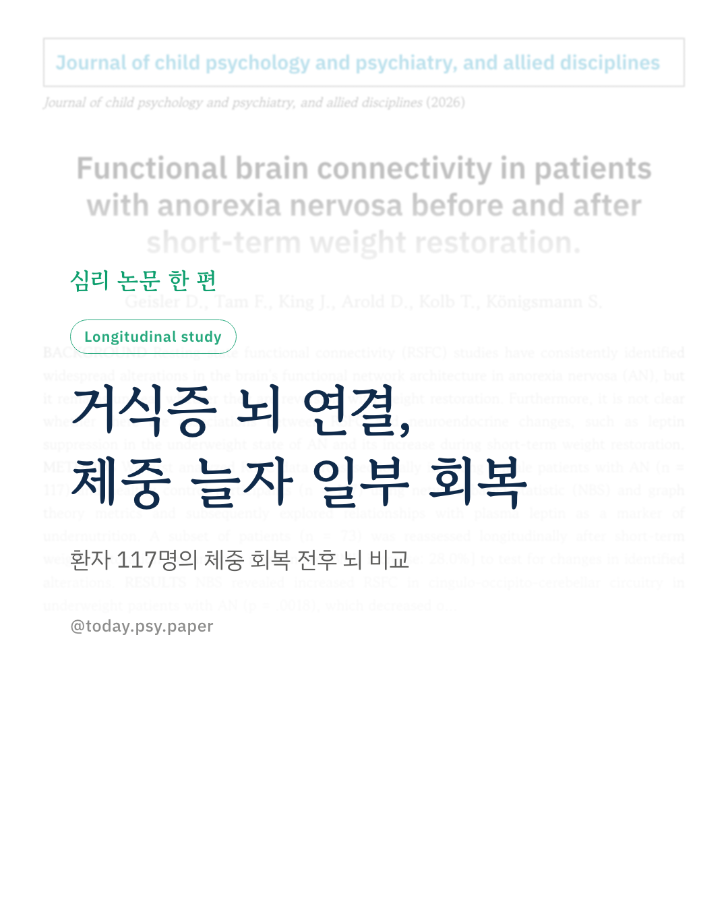
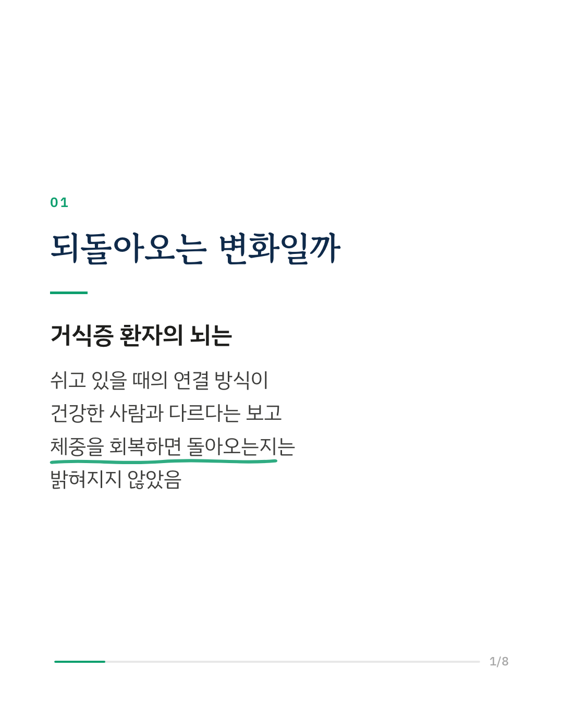
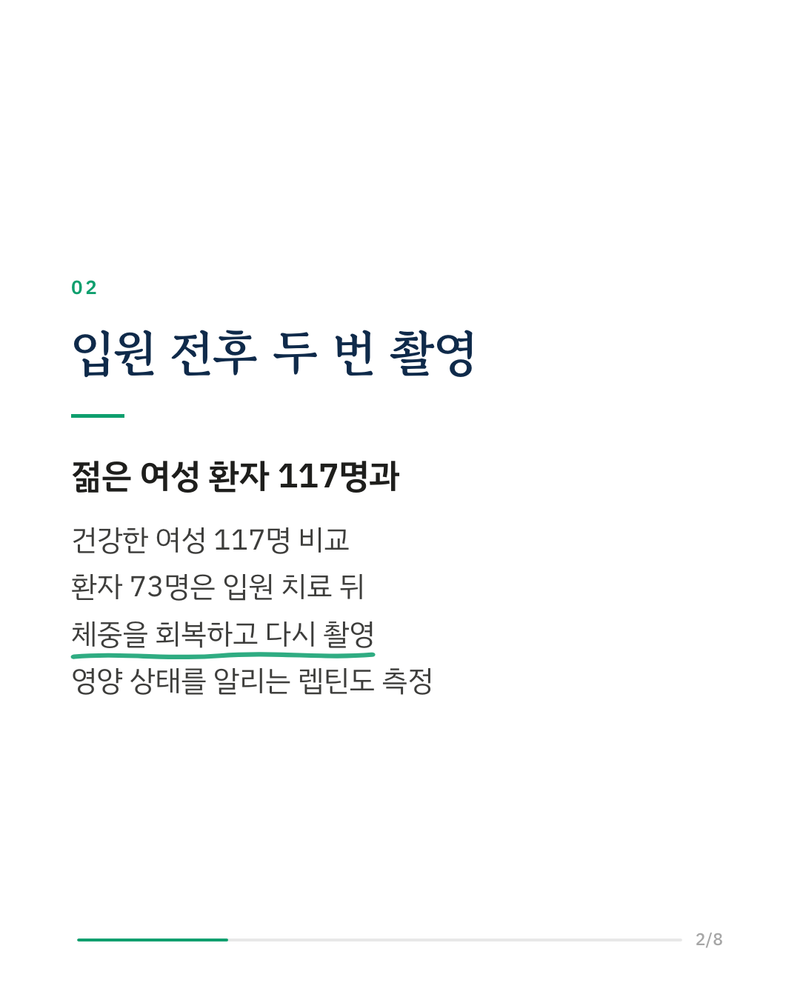
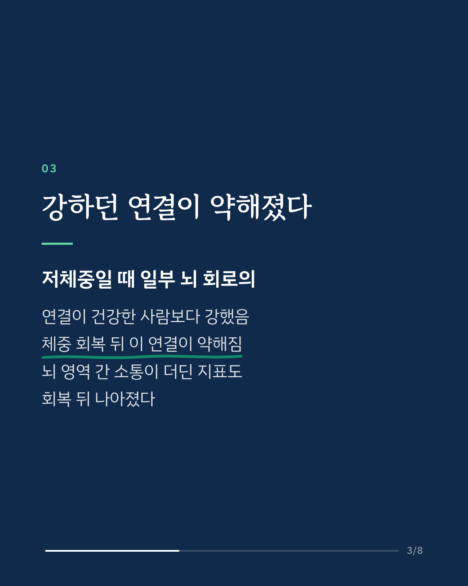
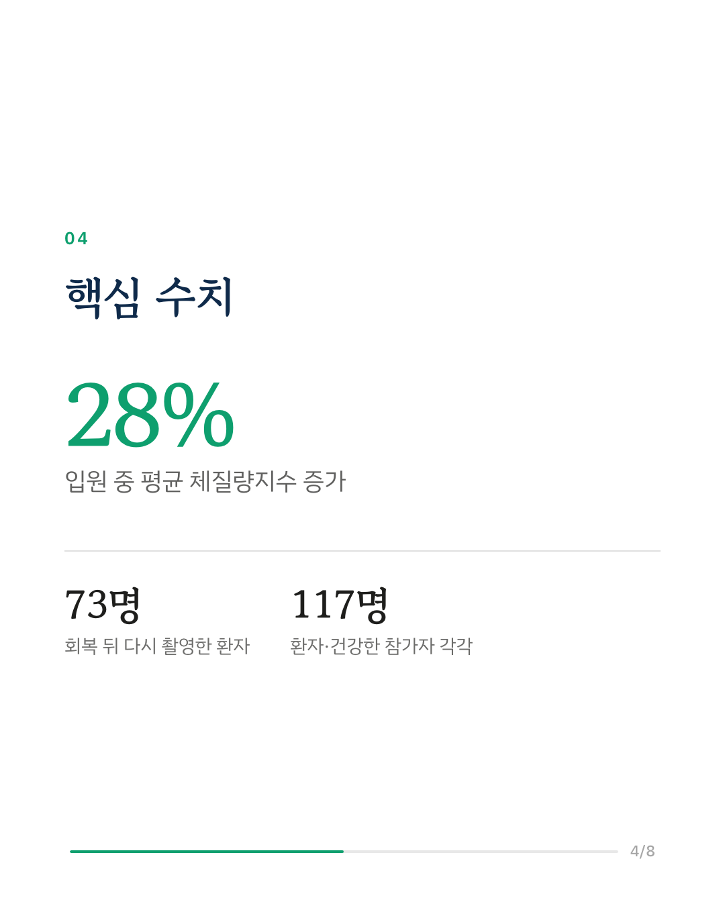
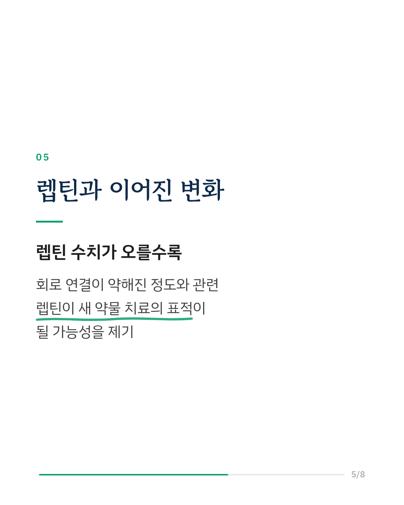
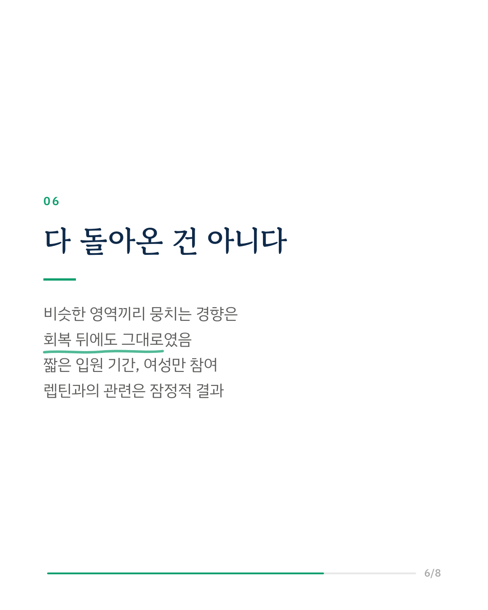
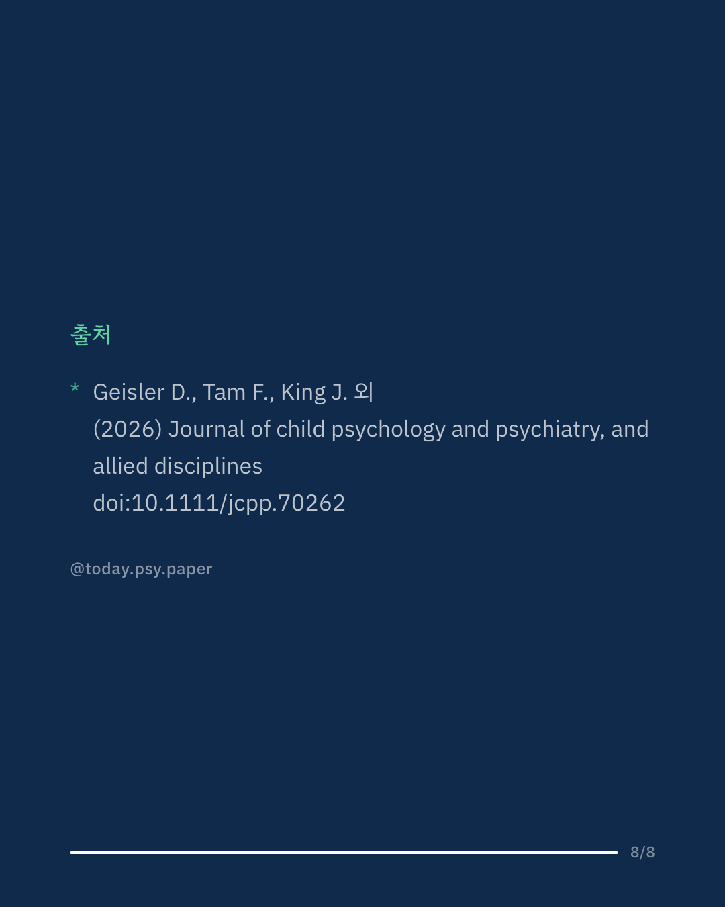

거식증(신경성 식욕부진증) 환자의 뇌는 쉬고 있을 때 영역끼리 연결되는 방식이 건강한 사람과 다르다고 알려져 있습니다. 이 섭식장애 연구는 그 변화가 체중을 회복하면 되돌아오는지 확인했습니다. 연구진은 젊은 여성 환자 117명과 건강한 여성 117명의 뇌 영상을 비교했고, 환자 중 73명은 입원 치료로 체질량지수를 평균 28% 회복한 뒤 다시 촬영했습니다. 저체중일 때 강해져 있던 일부 뇌 회로의 연결은 체중 회복 뒤 약해졌고, 뇌 영역 사이의 통합이 떨어져 있던 지표도 나아졌습니다. 이 변화는 영양 상태를 알리는 호르몬인 렙틴이 오른 정도와 관련이 있었습니다. 연구진은 렙틴이 앞으로 새로운 약물 치료의 표적이 될 수 있다고 말합니다. 다만 비슷한 영역끼리 뭉치는 경향은 회복 뒤에도 변하지 않았고, 짧은 입원 기간만 추적했으며 참가자가 모두 젊은 여성이었습니다. 출처: Journal of Child Psychology and Psychiatry (2026), 'Functional brain connectivity in patients with anorexia nervosa before and after short-term weight restoration.' DOI: 10.1111/jcpp.70262 #임상심리 #정신건강정보 #심리학연구 #논문리뷰 #거식증 #섭식장애 #신경성식욕부진증 #뇌과학
python3 publish.py 43004566